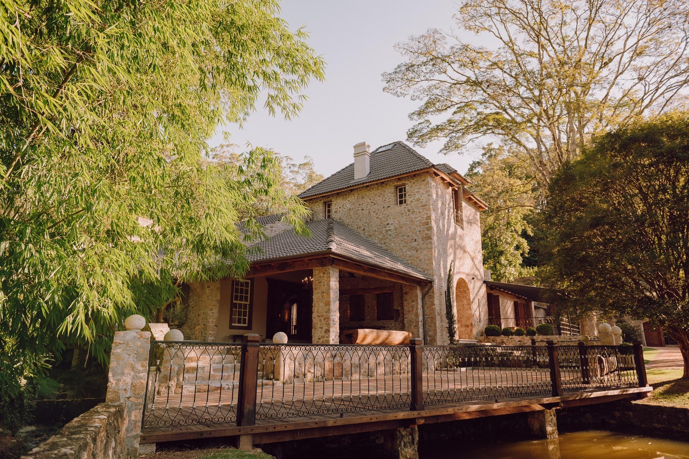

Quem sou eu
Giovanna Paola
Giovanna Paola organiza eventos desde antes de saber que isso tinha nome. Nas festas da família, era ela quem decidia onde cada pessoa sentava, que horas o bolo entrava e por que a decoração precisava combinar com a toalha. Tinha 12 anos.
Aos 20, casou — e se apaixonou pelo processo. Em 9 anos, construiu a Noiva S.A.: uma empresa reconhecida no mercado que não apenas coordena casamentos, mas forma profissionais da área. Assessoria, mentoria e formação — um ecossistema completo para o mercado de casamentos.
"Técnica como uma engenheira e acolhedora como uma amiga."
Giovanna conhece o mercado de casamentos por três ângulos que quase ninguém tem ao mesmo tempo: sabe o que a noiva sente (porque foi uma), sabe o que o fornecedor precisa (porque trabalha com eles todo dia) e sabe o que a assessora iniciante enfrenta (porque começou do zero e construiu tudo).
9Anos de mercado
500+Casamentos realizados
300+Fornecedores catalogados